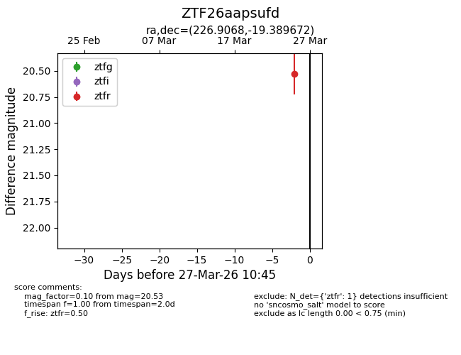
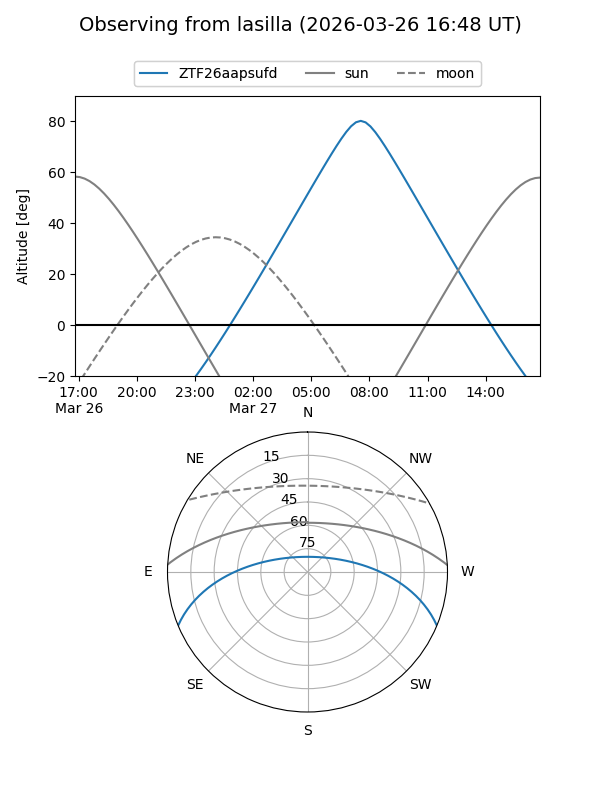
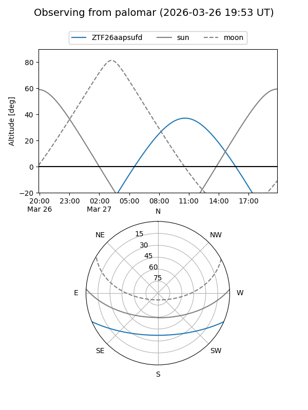

ZTF26aapsufd
Target ZTF26aapsufd at 2026-03-27 10:48
Aliases and brokers:
FINK: link
Lasair: link
ALeRCE: link
alt names
ZTF26aapsufd (ztf,fink_ztf)
Coordinates:
equatorial (ra, dec) = 226.9068,-19.38967
equatorial (HMS+DMS) = 15:07:37.63,-19:23:22.82
galactic (l, b) = (341.9457,+32.97103)
Flags:
Photometry:
last ztfr=20.53
1 ztfr detections
Lightcurve

Visibility


Additional plots